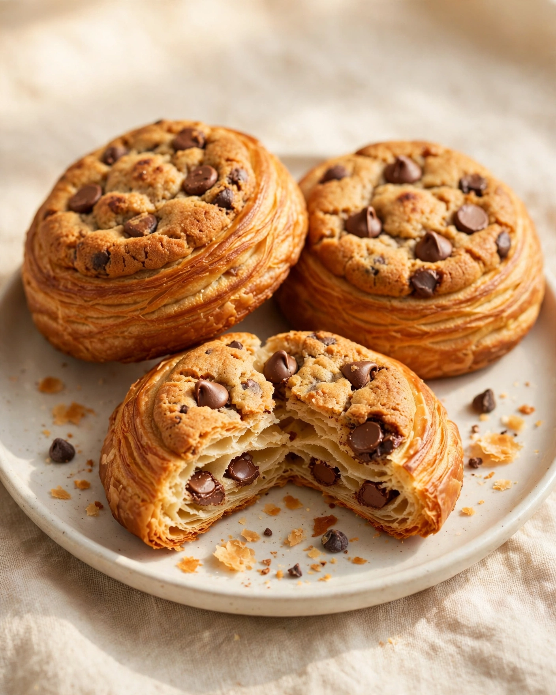
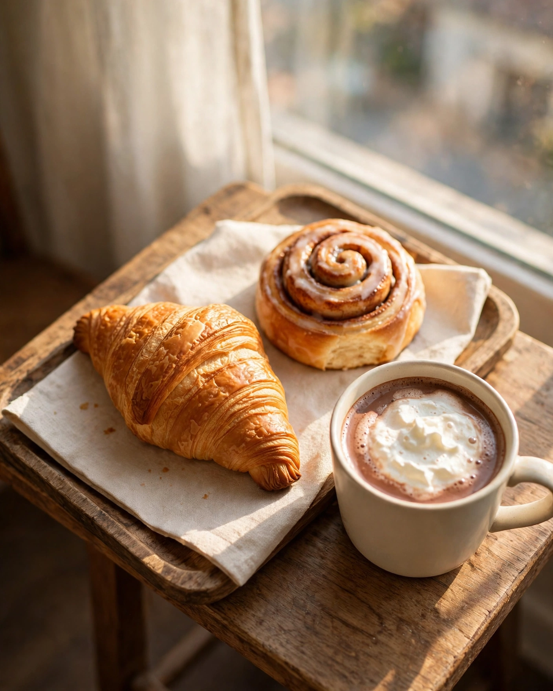

Original Crookies
Croissant trifft Cookie: blättrig, goldbraun und mit Schokoladenstücken. Gäste nennen sie ein Muss.
Frisch aus dem Fenster: Crookies, jeden Morgen.
Ein kleines Kaffee- und Gebäckfenster an der Hirschmattstrasse: cremiger Cappuccino, die originalen Crookies und Gelato, persönlich serviert von Inhaber Elias, jeden Morgen ab 7 Uhr.
Klein, persönlich, nur am Morgen: Alles gibt es auch zum Mitnehmen.
Vier Dinge, die in den Bewertungen immer wieder auftauchen: die originalen Crookies, der cremige Cappuccino, ein ganz besonderes Gelato und die herzhaften Empanadas.

Croissant trifft Cookie: blättrig, goldbraun und mit Schokoladenstücken. Gäste nennen sie ein Muss.
Cremig und voll im Geschmack, genau so loben ihn unsere Gäste in ihren Bewertungen.
Tropisch und frisch, mit Limette, Ananas und grünem Apfel. Ein Gast nennt es das einzige Lulo-Gelato der Schweiz.
Goldbraun gebacken, allen voran die Poulet-Empanada. Die Haussauce dazu nicht auslassen, sagen unsere Gäste.
Weich und zimtig, so beliebt, dass sie es in Luzerner Reiseprogramme geschafft haben.
Der herausragende Favorit unter den kalten Kaffees, sagen unsere Gäste.
Von Gästen als himmlisch beschrieben, warm und reichhaltig.
Frisch und mit Sorgfalt zubereitet, für den kleinen Hunger zwischendurch.
Grüner Matcha, von Gästen immer wieder gelobt.
Jede Saison bringt Elias neue, spannende Kreationen ans Fenster, berichten unsere Gäste.

Warm, gemütlich und echt: So beschreiben unsere Gäste das Dal Mattino.
Dal Mattino heisst auf Italienisch «vom Morgen», und genau dafür ist das kleine Café an der Hirschmattstrasse 28 da: Es öffnet um 7 Uhr und schliesst um 14 Uhr, der ganze Tag ist der Morgen.
Geführt wird es von Inhaber Elias, der seine Gäste persönlich bedient und für seine Produkte brennt. Gäste beschreiben die Atmosphäre als warm, freundlich und gemütlich, man fühlt sich willkommen, sobald man hereinkommt.
Das Angebot ist klein und eigen: originale Crookies, cremiger Cappuccino, Gelato mit Sorten wie der tropischen Lulo und herzhafte Empanadas. Dazu kommen saisonale Neuheiten und Gelato-Events, die auf Instagram angekündigt werden.
Über 350 Google-Bewertungen sprechen für sich: ein kleines Fenster mit einer grossen Fangemeinde in der Neustadt.
Kaffee, Gebäck und Gelato gibt es zum Mitnehmen, perfekt für den Weg in die Altstadt, an den See oder auf den Zug.
Unsere Gäste berichten: Jede Saison bringt neue, spannende Kreationen ans Fenster. Ein Blick auf Instagram lohnt sich.
Kein anonymer Betrieb: Inhaber Elias ist selbst vor Ort und berät dich gern zu Kaffee, Gebäck und Gelato.
Dal Mattino ist ein Morgenhaus: Von 7 bis 14 Uhr gibt es Kaffee, Gebäck und Gelato am Fenster, alles auch zum Mitnehmen.
Such dir oben aus, worauf du Lust hast, vom Crookie bis zum Lulo-Gelato.
Du findest uns an der Hirschmattstrasse 28, mitten in der Neustadt.
Kaffee, Gebäck oder Gelato in der Hand, und der Luzerner Morgen gehört dir.
Geöffnet ist Montag bis Freitag von 7 bis 14 Uhr und am Samstag von 8 bis 14 Uhr, sonntags bleibt das Fenster geschlossen. Gelato-Events und saisonale Neuheiten kündigt Elias auf Instagram an.
| Montag bis Freitag | 7:00 bis 14:00 |
|---|---|
| Samstag | 8:00 bis 14:00 |
| Sonntag | Geschlossen |
Öffnungszeiten gemäss Google-Eintrag. Änderungen vorbehalten.
Ein kleines Fenster für Kaffee, Gebäck und Gelato. Alles gibt es auch zum Mitnehmen.
Neustadt-Route, die Hirschmattstrasse ist Teil der offiziellen Neustadt-Wanderroute, vom Theater Luzern durchs Quartier.
Hirschmatt-Neustadt, ein lebendiges Quartier mit kleinen Läden, Galerien und Kinos, wenige Gehminuten von der Altstadt entfernt.